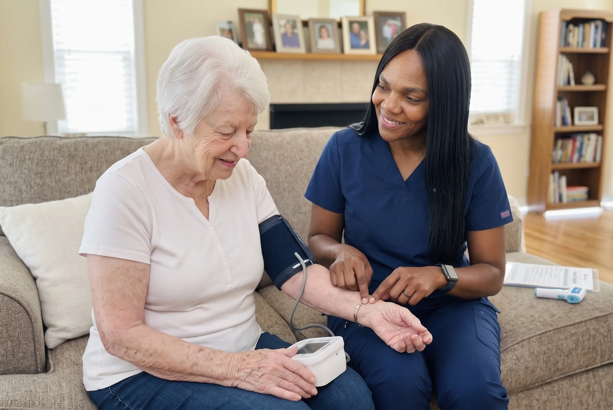

Hospital-Level Attention, Without the Hospital
Home nursing is clinical care that comes to the door. Instead of arranging transport to a clinic for a dressing change, a set of vitals or a medication review, a nurse arrives at the home, carries out the visit, and leaves the family with a clear picture of how their loved one is doing.
For many seniors that difference is more than convenience. Familiar surroundings reduce the confusion and fatigue that travel can cause, and a nurse who visits the home sees things a fifteen-minute appointment never will — how steady the walk to the kitchen is, whether the pill organizer is being used, whether the fridge is stocked.
OnPoint's home nursing program sits under the oversight of our Lead Registered Nurse. Every care plan begins with an assessment, is written down, and is reviewed as needs change.
Our aim is simple: catch the small changes early, while they are still small.

Signs a Family May Need Home Nursing
Home nursing is usually arranged at one of these moments. If more than one sounds familiar, it is worth a conversation.
Repeated trips to the clinic for routine tasks
If a weekly dressing change, an injection or a set of vitals means arranging transport, a wheelchair and half a day of somebody's time, that task can almost certainly come to the home instead.
A medication list nobody fully understands
Multiple prescribers, changes after a hospital stay, and a dosette box that is not being filled correctly. This is one of the most common reasons an older adult ends up back in hospital.
A wound that is not closing
Pressure areas, surgical incisions, diabetic ulcers or skin tears that have been dressed at home for weeks without clear improvement need proper clinical assessment.
A recent hospital admission
The weeks after discharge carry the highest risk of readmission. Nursing support through that window is one of the most effective things a family can arrange.
A chronic condition that seems to be drifting
Blood pressure, breathlessness, blood sugar or weight moving gradually in the wrong direction, without anyone tracking it systematically.
A family carer at the limit
When a spouse or adult child is doing clinical tasks they were never trained for, and are frightened of getting it wrong.
What Home Nursing Actually Involves
Home nursing is not a single task. These are the components a care plan is built from — most families use three or four of them.
Clinical Assessment & Care Planning
Everything starts with a full assessment in the home. Our Lead Registered Nurse reviews the medical history, current medications, recent hospital paperwork and the treating physician's direction, then examines the person themselves — skin integrity, mobility, cognition, continence, nutrition, pain.
Just as importantly, the assessment looks at the house. Where the bathroom is. Whether there are stairs. Whether the bed can be reached from both sides. Whether there is a family carer, and how much they are realistically able to do. A clinically perfect care plan that ignores a flight of stairs is not a care plan.
What comes out of it is a written document: what each visit will cover, how often nurses will attend, what the goals are, what warning signs everyone should be watching for, and who to call.
- Full head-to-toe clinical assessment
- Medication and medical history review
- Home environment and safety appraisal
- Family carer capacity discussion
- Written, goal-based care plan
- Scheduled reassessment as needs change
Health Monitoring & Vital Signs
Regular, consistent observation is the quiet backbone of home nursing. Blood pressure, pulse, temperature, oxygen saturation, blood glucose and weight, taken the same way each visit and written down.
The value is not in any single reading. It is in the trend. A blood pressure of 148 means very little on its own; a blood pressure that has climbed steadily across six weeks means something a physician can act on. That comparison is only possible if somebody has been recording it properly.
- Blood pressure, pulse and temperature
- Oxygen saturation (SpO2)
- Blood glucose monitoring
- Weight, appetite and hydration
- Pain assessment and scoring
- Trend reporting to family and physician
Medication Management
Older adults commonly take several medications prescribed by different clinicians, and the list changes after every hospital stay. Doses get missed, duplicated, or continued long after they should have stopped.
Our nurses supervise administration, review the regimen against what has actually been prescribed, watch for side effects and interactions, and flag anything that looks wrong to the prescriber. Where a dosette or blister pack is used, we check it is being filled and taken as intended rather than assuming.
- Medication administration and supervision
- Regimen review against current prescriptions
- Dosette and blister pack checks
- Side effect and interaction monitoring
- Injection administration where prescribed
- Liaison with the prescribing physician and pharmacy
Wound & Skin Integrity Care
Wound care in the home is one of the most common reasons families call us, and one of the areas where technique matters most. Our nurses assess and stage wounds, change dressings under sterile technique, and measure and document healing at each visit.
Prevention gets equal weight. For someone with limited mobility, a repositioning schedule and regular inspection of the heels, sacrum and hips prevents pressure injuries that would take months to heal once established.
- Wound assessment, staging and measurement
- Sterile dressing changes
- Pressure injury prevention and repositioning
- Diabetic foot and lower limb ulcer care
- Skin tear and fragile skin management
- Early infection identification and escalation
Recovery & Rehabilitation Support
After a hospital stay, a fall or a surgery, most older adults are weaker than they were — even a few days in a bed causes measurable loss of muscle strength. Recovery does not happen on its own, and the fear of falling often stops people moving at exactly the point they most need to.
Nursing support through this period means supervised mobility, safe transfers, and steady progression at a pace the person can manage, with the risks watched rather than ignored.
- Supervised mobility and gait support
- Safe transfer technique (bed, chair, bathroom)
- Fall risk reassessment after hospitalization
- Progress tracking against recovery goals
- Equipment and home set-up advice
- Coordination with physiotherapy where involved
Family Communication & Care Coordination
A large part of home nursing is making sure everyone involved is looking at the same picture. Families receive written notes after visits. Physicians receive summaries that give them real between-appointment data rather than a recollection.
Where other services are involved — a publicly funded home health team, a specialist clinic, a pharmacy, a physiotherapist — we coordinate around them rather than duplicating what they are already doing.
- Written visit notes for the family
- Health status summaries for physicians
- Coordination with publicly funded home health
- Liaison with specialists and clinics
- A named point of contact for questions
- Clear escalation pathway when things change
Most of what home nursing prevents is invisible — the readmission that did not happen, the wound that did not get infected, the fall that was designed out of the hallway.
One Team for the Clinical Side of Care
Home nursing is an umbrella. Most families start with one need and add others as circumstances change.
Assessment & Monitoring
Vital signs, chronic condition observation, and a written record families and physicians can both rely on.
Medication Oversight
Supervision of complex regimens, administration support, and watching for side effects or missed doses.
Wound & Skin Care
Sterile dressing changes, pressure injury prevention, and documented tracking of how a wound is healing.
Recovery Support
Structured follow-through after a hospital stay, a surgery, a fall or an acute illness.
What a Home Nursing Visit Includes
Visits are built around the care plan rather than a fixed script. A first visit is usually longer, since it establishes the baseline everything afterwards is measured against.
What Is Included:
What Happens on a Nursing Visit
Visits follow a consistent shape, so that changes in the person show up as changes in the record rather than differences in who happened to attend.
Arrival and check-in
The nurse greets the client, notes how they present compared with last time, and asks how the days since the last visit have gone.
Clinical observations
Vital signs and any condition-specific measurements are taken and recorded, using the same technique every visit.
Planned clinical tasks
The work the care plan calls for — dressing change, medication administration, injection, catheter or continence care.
General review
A wider look at skin, mobility, appetite, mood, pain and cognition, because these are where gradual decline shows first.
Notes and handover
Findings are documented, the family is updated, and anything needing a physician's attention is escalated before the nurse leaves.
Conditions and Situations We Commonly Support
If what your family is facing is not on this list, call us anyway — we will tell you honestly whether we are the right fit.
How Home Nursing Starts
Care Conversation
A no-pressure call to understand what is happening at home and whether nursing is the right level of support.
In-Home Assessment
Our Lead Registered Nurse visits, reviews the medical picture, and looks at the home itself.
Written Care Plan
You receive a plan setting out what each visit covers, how often nurses attend, and who to contact.
Ongoing Review
The plan is revisited as recovery progresses or needs change — it is not fixed at the first visit.
Why Families Choose OnPoint for Home Nursing
Registered nursing leadership
Care plans are set and reviewed under our Lead Registered Nurse, who brings over twenty years of clinical healthcare experience.
Everything is written down
You get notes after visits, not a vague verbal summary. So does the physician, with your consent.
Continuity of staff
We plan rosters to keep familiar faces attending, which matters enormously to older adults.
Straight answers
If we think you need less care than you asked for, or a different service entirely, we will say so.
Care around the person's routine
Visit times are built around when the person actually eats, sleeps and washes — not the other way round.
Culturally aware care
Metro Vancouver is diverse. Diet, language, modesty and family expectations are part of the care plan, not an afterthought.
Where We Provide This Service
OnPoint Nurse & Home Care serves families across Metro Vancouver. If you are just outside these communities, call us anyway — we will tell you honestly whether we can reach you reliably.
Home Nursing: Common Questions
Home care covers non-clinical support — personal care, meals, companionship, help around the house. Home nursing is clinical work carried out by nursing staff: wound care, medication administration, health monitoring, post-surgical follow-up. Many families use both, and the two teams coordinate around one care plan.
No. Families can contact us directly and book a care assessment. That said, we do ask about the treating physician and any recent hospital discharge paperwork, because nursing care works best when it lines up with the wider medical plan. We are also happy to take referrals from hospital discharge planners and community clinicians.
It depends entirely on the need. Some clients are seen daily during a recovery period and then step down to weekly. Others need a single weekly visit for monitoring and medication review over a long stretch. Visit frequency is set at the assessment and adjusted as things change.
We serve Burnaby, Surrey, New Westminster and Richmond. If you are just outside those areas, call us anyway — we will tell you honestly whether we can reach you reliably.
Yes, and it very often is. A typical arrangement has care aides providing personal care, meals and companionship on most days, with a nurse attending on a set schedule for the clinical work. Both work from the same care plan so that nothing falls between them.
Yes. All staff attending a client's home are screened before they start and work under our Lead Registered Nurse's clinical oversight. Ask us at the care assessment and we will walk you through exactly what our vetting covers.
Call us. Care plans are meant to be revisited, not filed away — a deterioration, a fall, a new diagnosis or a hospital admission all warrant reassessment. Where the change is urgent, we will prioritise getting a nurse out to reassess.